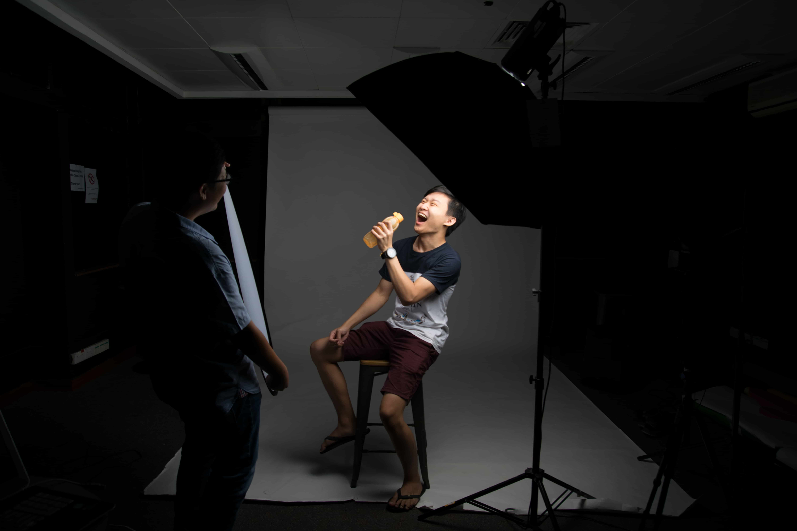

As my first post dedicated to this site, talking about passion and desires is a great start. As a student, having a dream job that is linked to my passion and desires is all I ever wanted. I never thought photography was one of them. Though it won't be my full time job but I hope to integrate it with my job in the future. Recently, I organised a studio session with a group of friends to help capture our portfolio images for our upcoming internship. During the session, I learned something meaningful. The work that I have done was gratifying. From setting up the equipment, taking the photos and post processing them, it wasn't burdenful or troublesome. That's passion at work. I pray and hope everyone could find their passion including you.
I pray and hope everyone could find their passion including you
Passion isn't something hard to find or get, it just needs you to be aware of your lifestyle and apply it to your work. Passion isn't a myth. It's something real and authentic. Some people might say that life and work isn't all rainbow and cupcakes. I disagree. Life is what you make it to be. Most of us portray work as a hassle and a survival to life. We need to work to earn a living. Well, earning is one key importance but out of the work we do, do we really need to be in constant disappointment and sadness?
To be honest, we don't need to. Seeing and hearing stories from many people, there are people who are content and satisfied with what they have and own while remaining joyful and content with the work they do and how much they earn even if the salary isn't equivalent to some big shot CEO. It is sad that in the world we live in, it is portrayed that money, wealth and success is what makes someone happy. But it's not the reality. Each time, when we get better and more successful in life, we want more. More than ever before. It'll never end and we'll never be content. It's a desire that every single human being has. A constant feeling of unhappiness and wanting more. We all need to start being contented with what we have. Contentment starts with appreciating what you have and own, not what you want or wish to have. There is no better example than this quote by Jesus and Lao Tzu.
Look at the birds of the air; they do not sow or reap or store away in barns, and yet your heavenly Father feeds them. Are you not much more valuable than they?
Jesus

Health is the greatest possession. Contentment is the greatest treasure. Confidence is the greatest friend. Non-being is the greatest joy.
Lao Tzu
In a nutshell, it's up to us and our choices that molds our passion and desires. I believe the concept of work and the worldviews about work should be shaped positively and according to how God commanded it to be. With that, I'll end this post with another quote that has shaped me to be who I am today.